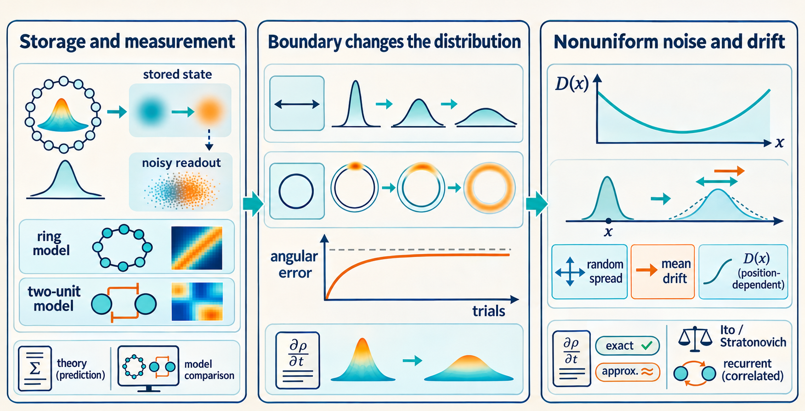
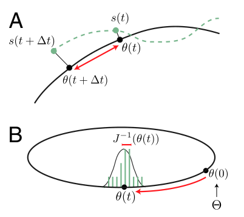
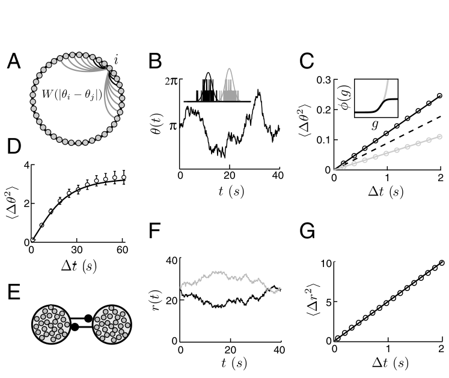
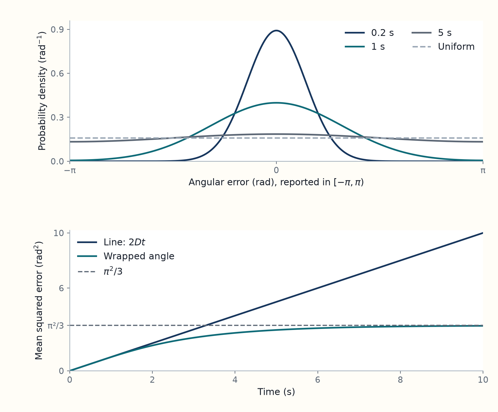
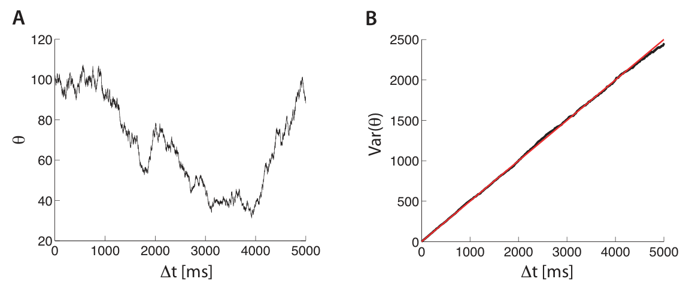

4 Boundaries and drift change memory error over long delays
Follow the paper’s diffusion section through Figures 1 and 2, then use the supporting text to explain how boundaries, angular wraparound, state-dependent diffusion, and systematic drift affect longer delays.
Unreviewed draft diagrams. These AI-generated images may contain incorrect or missing labels, arrows, formulas and numbers. Use the chapter text and paper links as the source for the explanation.

[Interpretation] A rate of random spreading measured near one stored value does not yet tell us how memory error behaves after a long wait. The value may approach a boundary, wrap around an angular range, or reach a region where the spreading rate differs. A consistent movement of the average value would also change the error without being captured by the rate of random spreading alone.
[Paper section: “Diffusive Drift due to Ongoing Neural Noise”] The main article, pp. 2–3, predicts that short-time memory displacement has variance approximately \(2Dt\) and compares this prediction with two simulated network designs. Here \(D\) is the diffusion coefficient and \(t\) is elapsed time; the relation uses a locally constant \(D\) and negligible systematic drift. Figure 1 also separates this storage error from the error of reading the current state from noisy spikes. The supporting text extends the calculation to long delays and distinguishes spreading from systematic drift.
[Background] Here \(\theta\) is the current stored value and \(\Theta\) its common initial value across trials. The local diffusion coefficient \(D(\theta)\) comes from the weak spike fluctuations derived in the preceding chapter, after stable disturbances have relaxed. For constant \(D\), displacement variance is \(2Dt\) before boundaries matter and when there is no systematic drift.
4.1 Figures distinguish memory motion from readout error and test diffusion
[Paper] In Fig. 1, PDF p. 2, noise moves the represented value \(\theta(t)\) away from its initial value \(\Theta\) while the activity pattern persists. Its short-time variance is \(2Dt\), whereas an unbiased estimate of the current value from a short sample of duration \(h\) has variance at least \(1/(Jh)\), where \(J\) is the internal Fisher information rate. The two errors answer different questions: how the state moved, and how accurately its present position can be read. Fig. 2, PDF p. 3, compares the calculated spreading with simulated ring and mutual-inhibition networks; under the model assumptions, the predictions match the simulated trajectories without a free diffusion parameter. Materials and Methods, PDF p. 6, specifies the simulations.
[Interpretation: Figure 1] Figure 1A, p. 2 illustrates the coordinate assigned by the return flow in Chapter 3. The green state returns to the black attractor point under noise free dynamics. Comparing the endpoints before and after one noisy interval isolates the retained memory change. The tilted two variable example shows why the return path matters.
In Fig. 1B, an activity bump is a localized peak of population firing rates across the neurons’ preferred angles. The figure separates two sources of error:
- During storage, the bump’s location has moved away from its initial value \(\Theta\).
- At the later time, an observer has additional uncertainty about the bump’s current location because it sees only a finite sample of spikes.
The information calculation measures this second uncertainty and relates it to diffusion. The readout chapter then follows observation of the moving state.1
Original paper figure: Burak and Fiete (2012), Figure 1


[Paper] Figure 2, p. 3, tests the diffusion calculation in two designs (original figure, PDF p. 3). In the ring, \(W_{ij}=f(\vartheta_i-\vartheta_j)\) depends on the difference between neurons’ preferred angles \(\vartheta_i\) and \(\vartheta_j\), with \(f(\delta)=e^{\cos\delta-1}-e^{0.3(\cos\delta-1)}\). The authors simulate \(N=1024\) neurons, constant bias \(b=-2\) and \(\tau=10\) ms, using 100 trials of 1,000 s with 0.1 ms steps. Their two transfer rules are \(\tau\phi(g)=10e^g\) and \(\tau\phi(g)=0.2[1+\tanh(g+4)]\), where \(g\) is a neuron’s total input and \(\phi\) maps input to firing rate. Both simulations agree with their respective diffusion predictions. The second design uses two mutually inhibiting units without rotational symmetry: \(W_{12}=W_{21}=-1\), \(W_{11}=W_{22}=0\), common input \(b=5000\), \(\tau=100\) ms and \(\tau\phi(g)=g\) in the active range. For the memory coordinate \(\theta=\tau(\bar r_1-\bar r_2)\), the predicted diffusion coefficient is \(D=b/(2\tau)\). Its simulated rate-difference spreading also agrees with the calculation. The individual panels and their measurements are described below.
[Derivation: two-unit diffusion] The steady rates satisfy \(\bar r_1+\bar r_2=b/\tau\). Independent Poisson spike fluctuations in the activation difference \(\theta\) have variance \((\bar r_1+\bar r_2)dt\) in an interval \(dt\). Therefore \(\operatorname{Var}[\Delta\theta]\simeq(b/\tau)dt=2Ddt\), which gives \(D=b/(2\tau)\) in the local active region.
[Interpretation: Figure 2] This gives the finite ring a rotational symmetry: shifting the activity pattern by a whole number of neuron positions leaves its dynamics unchanged in form.
Panel B shows the exponential-transfer simulation with 1,024 neurons. Its inset compares activity patterns 10 seconds apart. The horizontal axis orders neurons around the ring; the solid curves show their firing rates, with peaks near 85 Hz. Vertical marks show the spikes emitted in a 10 ms window at each snapshot. The peak moves between snapshots. The main trace follows the represented angle through time, rather than overall activity amplitude. The pattern can persist while its position, and therefore the remembered value, changes.
Panels C and D test different parts of the prediction:
- Panel C compares simulated mean squared angular displacements with the prediction from the tuning curves and transfer function. The gray exponential case and black sigmoidal, or S-shaped, case have different transfer functions, shown in its inset. Circles are simulation measurements; solid lines are the diffusion prediction from Eq. 2. The dashed information bound is a lower limit for the sigmoidal case, not a separate fitted trajectory. A model can lie above its information bound while still agreeing with the derived diffusion formula. Error bars in C and D show the standard error of the mean (SEM): uncertainty in the mean MSD estimated from 100 trials, rather than the spread of individual trial values. In C they are smaller than the symbols.
- Panel D follows angular error to longer intervals. Its theoretical curve inserts the predicted diffusion coefficient into the wrapped-angle mean squared error formula, SI Eq. S32. It therefore includes the effect of periodic boundaries rather than extending the short-lag straight line indefinitely. Its flattening uses angular wrapping, not a disappearance of noise. The expected limiting value with the caption’s error convention is \(\pi^2/3\). For a uniform wrapped error \(x\) on \([-\pi,\pi)\), the calculation gives \(E[x^2]=(1/2\pi)\int_{-\pi}^{\pi}x^2dx=\pi^2/3\). The long-delay calculation shows how the wrapped density approaches this limit.
Panel E replaces the ring with two mutually inhibiting units, which can also represent two neural populations. Equal opposing weights and a linear firing rule support a continuous range of rate differences. That difference represents a nonperiodic stored value, rather than an angle that wraps around.
In F the two rates vary in opposite directions. The vertical axis uses \(\mathrm{ms}^{-1}\): one spike per millisecond is 1,000 spikes per second. The large plotted rates can describe the summed activity of each population. They should not be read as ordinary rates of two individual biological neurons.
Panel G asks how far their rate difference changes over a lag. For each lag, the authors square that change and average over starting times in the 200-second simulation. Its vertical axis therefore has units \((\mathrm{ms}^{-1})^2\), while its horizontal axis is lag in seconds. Circles are those measurements; the solid line is the diffusion prediction from Eq. 2. The simulation chapter writes out the measured quantity and its unit conversion. This second design matters because the projection argument does not require rotational symmetry. These are simulations checking the model calculation. They are not direct measurements of memory noise in an animal.2
Original paper figure: Burak and Fiete (2012), Figure 2


[Interpretation] Figure 2D shows why the short-time diffusion rate is not the whole long-delay story. The next section derives the effect of angular wrapping and considers state-dependent diffusion.
4.2 Long delay errors depend on boundaries and local diffusion
[Paper] To follow memory over longer delays, the authors evolve the probability density \(p(\theta,t)\) of the represented value. With no systematic drift it satisfies \(\partial_t p=\partial_\theta^2[D(\theta)p]\), starting from \(p(\theta,0)=\delta(\theta-\Theta)\). Here \(\theta\) is the value represented at time \(t\), \(\Theta\) is the value shared by the trials at time zero, and \(D(\theta)\) is the local diffusion coefficient: in a short suitable interval \(dt\) the displacement variance is approximately \(2D(\theta)dt\). The symbol \(\delta\) denotes a point mass at the initial value. For constant \(D\) on an unbounded line the density is Gaussian with variance \(2Dt\); on a ring it is wrapped around the angular range and approaches a uniform density. These results are in supporting text, section III, Eqs. S28–S32, PDF p. 7, with state-dependent cases on pp. 8–9. The steps below expand their derivations.
[Interpretation] Spike fluctuations keep shifting the stored value after the cue has ended. The local diffusion coefficient describes the variance of those shifts after stable disturbances have relaxed. It does not by itself say that variance grows at the same rate forever: boundaries and variation of \(D\) can change the long time behavior. The derivation first permits \(D\) to vary with the memory state; the line and circle examples then keep \(D\) constant to compare different boundaries.
[Derivation] Let \(p(\theta,t)\) be the density of the memory coordinate across repeated trials initialized at \(\Theta\). The Itô convention evaluates a state-dependent noise coefficient at the beginning of each increment. A density equation tracks how small random increments redistribute probability. The calculation below first obtains that equation for a general state-dependent \(D\). Constant \(D\) then gives the line and circle solutions.
[Paper] In the zero-drift diffusion approximation, this density evolves according to the Fokker Planck equation: This is SI Eqs. S28–S29, p. 7.
\[ \frac{\partial p}{\partial t} =\frac{\partial^2}{\partial\theta^2}[D(\theta)p], \qquad p(\theta,0)=\delta(\theta-\Theta). \]
[Derivation: the density equation] To pass from random increments to this equation, choose any smooth function \(F(\theta)\). In a short interval \(dt\), the zero-drift Itô increment has conditional mean zero and conditional second moment \(2D(\theta)dt\). Taylor expansion at the starting coordinate gives
\[ \begin{aligned} \mathbb E[F(\theta+d\theta)-F(\theta)\mid\theta] &=F'(\theta)\mathbb E[d\theta\mid\theta] +\tfrac12F''(\theta)\mathbb E[(d\theta)^2\mid\theta]+o(dt)\\ &=D(\theta)F''(\theta)dt+o(dt). \end{aligned} \]
The higher-order terms vanish faster than \(dt\) in this diffusion approximation. Averaging over the starting-coordinate density and dividing by \(dt\) gives
\[ \frac{d}{dt}\int F(\theta)p(\theta,t)\,d\theta =\int F''(\theta)D(\theta)p(\theta,t)\,d\theta. \]
Take \(F\) to vanish outside an interior region, or use boundaries for which the integration terms vanish. Integrating by parts twice moves both derivatives from \(F\) onto the product \(Dp\). Because the resulting identity holds for every such smooth \(F\), it gives the density equation displayed above.
[Interpretation] Here the Dirac delta denotes a point mass: initially all probability is at \(\Theta\). It differs from the earlier zero-or-one symbol \(\delta_{ij}\).
[Paper] For constant \(D\) on an unbounded line, the Gaussian solution is SI Eq. S30, p. 7:
\[ p(\theta,t)=\frac{1}{\sqrt{4\pi Dt}} \exp\left[-\frac{(\theta-\Theta)^2}{4Dt}\right]. \]
[Paper] The unbounded Gaussian has variance \(2Dt\). For an angular coordinate the authors wrap it onto a circle by adding all turns \(k\in\mathbb Z\):
\[ p_{\rm ring}(\theta,t)=\frac{1}{\sqrt{4\pi Dt}} \sum_{k=-\infty}^{\infty}\exp\!\left[-\frac{(\theta-\Theta+2\pi k)^2}{4Dt}\right]. \]
This is SI Eq. S31, p. 7. At long times the density approaches \(1/(2\pi)\); individual paths continue moving even though the circular density becomes uniform.
[Derivation] Let \(x\) be the angular error in radians. If errors are reported in \([-\pi,\pi)\), their limiting mean squared value is
\[ \frac{1}{2\pi}\int_{-\pi}^{\pi}x^2dx=\frac{\pi^2}{3}. \]
[Interpretation] The flattening of a ring network’s error curve can therefore occur while its local noise mechanism remains unchanged. It reflects the bounded way angular error is reported.3
[Example] For \(D=0.5\,\mathrm{rad}^2/\mathrm{s}\), the plots show how the density and squared error change with delay.

[Interpretation] As the wrapped density approaches uniform, its mean squared error approaches \(\pi^2/3\). The unbounded line error keeps growing.
[Paper] For zero-drift diffusion with a state-dependent \(D(\theta)\), the supplement obtains \(\operatorname{Var}[\theta(t)-\Theta]=2D(\Theta)t+D(\Theta)D''(\Theta)t^2+\cdots\) at short times, where \(D''\) is the second derivative with respect to the represented value. The first term is the local diffusion result; curvature in \(D\) produces the displayed next correction. The supplement then gives a mutual-excitation example and tests it in simulation (Eqs. S33–S41, PDF pp. 8–9; Fig. S1, PDF p. 10). The steps below show the moment calculation and identifies an apparent factor discrepancy in the printed example.
[Derivation] When \(D\) varies with state, the zero drift stochastic equation is \(d\theta=\sqrt{2D(\theta)}\,dB\) with the Itô convention. Here \(dB\) is a Brownian increment of mean zero and variance \(dt\). Under conditions that remove boundary terms, the density equation gives
\[ \frac{d}{dt}E[\theta]=0, \qquad \frac{d}{dt}\operatorname{Var}(\theta)=2E[D(\theta)]. \]
[Derivation] To obtain these identities, multiply the density equation by \(\theta\) or \((\theta-\Theta)^2\), integrate over \(\theta\), and integrate by parts twice. The second derivatives of these functions are respectively zero and two, giving the two identities. A similar calculation for the smooth function \(D\) gives \(dE[D]/dt=E[DD'']\). Expanding at \(t=0\) therefore yields
\[ \operatorname{Var}(\theta) =2D(\Theta)t+D(\Theta)D''(\Theta)t^2+O(t^3). \]
[Paper] This is SI Eq. S37, p. 8.4
[Paper] In this Poisson model, the rate of random spreading can change as the stored value changes, because the current firing rates set the spike-count variability. The supplement illustrates this dependence with mutual excitation, \(W_{12}=W_{21}=1\), biases \((b_0,-b_0)\), and the same linear transfer rule. The fixed activation states are \((\theta+b_0/2,\theta-b_0/2)\), and the transfer rule is \(\phi(g)=g/\tau\). The supplement prints \(D(\theta)=\theta/(2\tau)\) in Eq. S40 and a variance \(\Theta t/(2\tau)\) in Eq. S41 (supporting text, Eqs. S38–S41, PDF p. 9). With the stated convention \(\operatorname{Var}(\Delta\theta)=2Dt\), these two printed expressions differ by a factor of two. An independent calculation checks this discrepancy below; it is not an author-issued correction.
[Derivation] For this example the tangent and left projection vectors are \(\mathbf u=(1,1)^T\) and \(\mathbf v=(1/2,1/2)^T\).
[Interpretation] Here \(\theta\) is an activation coordinate, not an angle, and both steady rates are positive only when \(\theta>|b_0|/2\). When both activations rise together, each cell raises the other’s firing enough to replace the extra synaptic decay. This common increase persists and changes the stored value. A disturbance in their difference instead decays toward the difference set by the biases. Larger \(\theta\) raises both firing rates and hence both Poisson count variances. Because the projection weights stay fixed in this example, more of that variability remains as memory error.
[Derivation] For the mutual excitation network, substituting \(v_1=v_2=1/2\) into the diffusion formula gives
\[ 2D=\frac{1}{4}(\bar r_1+\bar r_2)=\frac{\theta}{2\tau}, \qquad D=\frac{\theta}{4\tau}. \]
[Interpretation] A state dependent \(D\) need not produce a nonlinear increase of variance with time. If \(D\) is linear in \(\theta\), then \(E[D(\theta)]=D(E[\theta])=D(\Theta)\), so the variance remains linear while the process stays within the model’s valid domain. The implied variance for this network is \(\Theta t/(2\tau)\), agreeing with SI Eq. S41, p. 9 and the slope tested in Fig. S1, p. 10. SI Eq. S40 instead prints \(D=\theta/(2\tau)\). Under the convention used throughout this discussion, that displayed value differs by a factor of two from the direct projection and S41. This is the independent check, not an author-issued correction.5
Original paper figure: Burak and Fiete (2012), Figure S1


4.3 A diffusion calculation does not determine systematic drift
[Paper] Systematic motion is a nonzero mean displacement, distinct from trial-to-trial spreading. To estimate a possible noise-induced drift, the supplement compares Itô and Stratonovich interpretations of \(d\theta=\sqrt{2D(\theta)}\,dB\). The Itô version with no written drift has zero mean increment, whereas the Stratonovich version has mean increment approximately \(\tfrac12 D'(\theta_0)\,dt\) when started at \(\theta_0\). The authors offer this difference as a scale estimate, not an exact derivation of the microscopic neural process (supporting text, Eqs. S19–S20, PDF pp. 4–5). The explicit convention conversion below is a derivation developed here.
[Derivation] For state dependent \(D\), where the coefficient is evaluated affects the process. The Stratonovich convention uses midpoint evaluation in its limiting increments. With the same written coefficient and zero written drift, it describes a different process from the Itô equation. If noise is stronger at larger values, a positive step samples stronger noise at its midpoint and a negative step samples weaker noise. Their average no longer cancels. Converting to Itô form expresses this effect as a drift \(D'/2\). The supplement uses the difference to estimate a possible scale of noise induced drift, not to identify the exact drift of every neural network.
[Derivation: midpoint evaluation] Write \(b(\theta)=\sqrt{2D(\theta)}\) in a region where \(D\) is positive and smooth. A Stratonovich step uses \(\Delta\theta=b(\theta+\Delta\theta/2)\Delta W\). Expand about the starting value and use \(\Delta\theta\simeq b\Delta W\) in the correction:
\[ \Delta\theta\simeq b\Delta W+\frac{b'}2\Delta\theta\Delta W \simeq b\Delta W+\frac{bb'}2(\Delta W)^2. \]
Since \(E[\Delta W]=0\) and \(E[(\Delta W)^2]=\Delta t\), the added mean step is \(bb'\Delta t/2\). Differentiating \(b^2=2D\) gives \(bb'=D'\), so the mean velocity is \(D'/2\). The squared-increment term contributes to the limit as the time steps shrink. If \(D\) is constant, the correction vanishes. This expansion explains the convention change. It does not determine which convention a microscopic neural process produces.
[Interpretation] Repeated trials can spread apart even if their average stays at the original value. That random spreading differs from a reproducible movement in one direction. Both can occur, and the derivation of \(D\) alone does not settle the second question.
[Paper] The paper assumes that the network is tuned to eliminate systematic drift, meaning a nonzero mean velocity along the attractor. A deterministic mismatch in weights can create such a velocity. In addition, state dependent noise and curved network dynamics can create a small mean motion even if the noise free model has an exact continuous attractor. The supplement explains that deriving the exact mean motion requires the microscopic jump process, beyond the leading variance calculation (SI “Systematic drift,” pp. 4–5).6
[Interpretation: random and systematic drift] With \(D\) of order \(1/N\), random displacement over \(dt\) is of order \(\sqrt{dt/N}\), while such a mean displacement is of order \(dt/N\).
The variance calculation captures the leading random term. Small changes to weights or biases might cancel the mean drift. They cannot remove the random increments by subtracting a known average. A known mean drift can in principle be accounted for by a decoder, but any actual implementation must know that drift and respect the domain and boundary conditions.
[Paper] In the Discussion, PDF p. 5, the authors suggest that an information–diffusion bound may extend beyond independent Poisson spikes, including systems with correlated noise. Their established basic-model bound is \(D\ge 1/(2\tau^2J)\), with \(J\) the internal information rate and \(\tau\) the synaptic time constant. They do not derive a universal correlated-noise formula there: extending the principle and identifying the appropriate information and time scales are conjectures to be tested.
[Derivation] The independence assumption also has a precise scope. Newly generated spike-count fluctuations are conditionally independent given the present state. Shared recurrent fluctuations can still correlate the observed spike trains over time. An extra source of correlated fluctuations would change the projection formula to \(2D=\mathbf v^TQ\mathbf v\), where \(Q\,dt\) is their increment covariance. A matching calculation of information would need the probabilities of joint spike patterns. The paper discusses such correlated models as future extensions (Discussion, p. 5, paragraph beginning “Our spiking model”). It does not prove that every correlated spiking model obeys its Poisson formulas.7
[Interpretation] The diffusion calculation gives \(D\) from spike variability and the network’s return flow. The paper next asks how much information the same neural activity provides about the represented value, and how that information limits \(D\).
Burak, Y., & Fiete, I. R. (2012). Fundamental limits on persistent activity in networks of noisy neurons. PNAS, 109(43), 17645–17650, Fig. 1 and caption, p. 2; flow definition, “In what follows,” p. 2. DOI. ↩︎
Burak, Y., & Fiete, I. R. (2012). Fundamental limits on persistent activity in networks of noisy neurons. PNAS, 109(43), 17645–17650, Fig. 2 and caption, p. 3; Network Simulations: ring model, p. 6 and mutual inhibition, p. 6. DOI. ↩︎
Burak, Y., & Fiete, I. R. (2012). Fundamental limits on persistent activity in networks of noisy neurons, Supporting Text: density equation, Eqs. S28–S29, p. 7; Gaussian on a line, Eq. S30, p. 7; wrapped density and uniform limit, Eq. S31, p. 7; angular error, Eq. S32, p. 8. DOI. The uniform angular variance calculation is a teaching reconstruction. ↩︎
Burak, Y., & Fiete, I. R. (2012). Fundamental limits on persistent activity in networks of noisy neurons, Supporting Text, Eqs. S33–S37, p. 8. DOI. ↩︎
Burak, Y., & Fiete, I. R. (2012). Fundamental limits on persistent activity in networks of noisy neurons, Supporting Text, Eqs. S38–S41, p. 9; Fig. S1, p. 10. DOI. The factor discrepancy between S40, S41, and the projection calculation is visible in the supplied PDF. No author correction is asserted. ↩︎
Burak, Y., & Fiete, I. R. (2012). Fundamental limits on persistent activity in networks of noisy neurons, Supporting Text: “Systematic drift,” p. 4; Eqs. S19–S20 and continuation, p. 5. DOI. ↩︎
Burak, Y., & Fiete, I. R. (2012). Fundamental limits on persistent activity in networks of noisy neurons. PNAS, 109(43), 17645–17650, Discussion, p. 5, paragraph beginning “Our spiking model”. DOI. The covariance projection is an immediate linear algebra extension. The paper’s proposed general correlated noise inequality remains a conjecture there. ↩︎